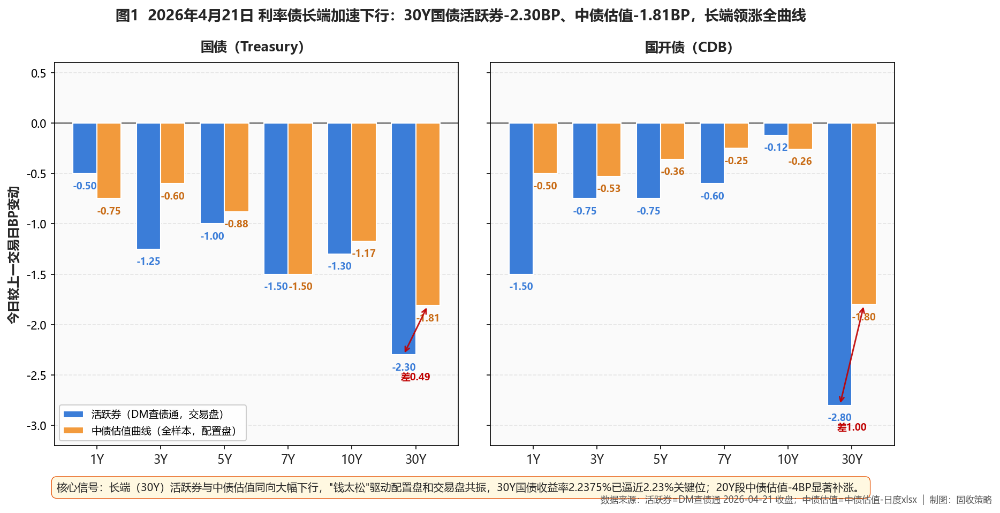
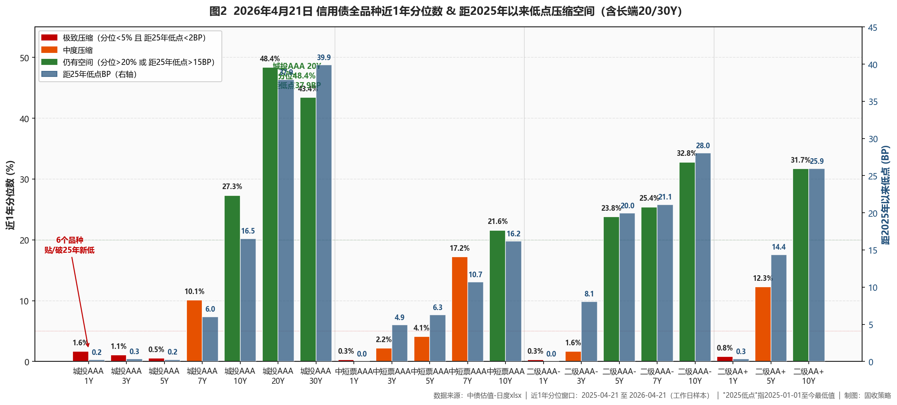

市场定性 长期震荡市 + 牛平末期加速 + 长端利率触及敏感位——30Y国债中债估值2.2375%、距2.23%仅0.75BP；20Y段-4BP大幅补涨；二级AAA- 10Y -2.32BP领涨信用板块，长端利率触及翻转信号边缘、止盈纪律要提前准备。
- ✅ 长端信用（核心）首选：二级AAA- 10Y（今日-2.32BP领涨、分位32.8%/距低点28.0BP）+ 城投AAA 20/30Y（分位43-48%/距低点37.9-39.9BP）；合计15-25%；30Y加仓节奏减半（利率关键位临近，不追涨）
- ✅ 中段品种5Y二级AAA-（-0.73BP、分位23.8%/距低点19.95BP）+ 5Y二级AA+（-0.73BP、分位12.3%/距低点14.37BP），合计25-30%；7Y二级AAA- -1.25BP、分位25.4%/距低点21.1BP可加配
- ❌ 规避短端贴底中短票AAA/AA+ 1Y、中短票AA+ 5Y、二级AAA- 1Y、二级AA+ 1/3Y、城投AA+ 3Y——今日均破2025年新低（距低点=0、分位<1%）；中短票AAA 5Y+0.45BP逆势走弱、止盈
- ❌ 止盈长端利率债30Y国债距2.23%仅0.75BP、20Y单日-4BP补涨结束；长端从"方向性机会"切到"事件驱动+止盈窗口"——触及即兑现、不再追涨
- ① 30Y国债触及2.23% ⚠️今日2.2375%、距仅0.75BP→广发止盈目标位、央行合意区间边界，长端利率债当日减仓兑现、暂停超长信用新增买入
- ② 10Y国债触及1.75% ⚠️今日1.7510%、距仅1.0BP→下行动能衰减、空间透支，长端利率债止盈、观望政治局会议/央行表态
- ③ R-DR利差走阔至 >15BP（当前极窄、分层消失）→流动性分层重现、加杠杆窗口关闭，去杠杆至≤105%、减仓中低等级久期品种
- ④ 10Y中短票AAA-3Y利差跌破25BP（当前44.1BP、较昨日-0.40BP）→中长-中端价差耗尽，止盈10Y中短票、转配5-7Y二永中段
- ⑤ 30Y-10Y城投AAA利差跌破15BP（当前34.85BP、较昨日+0.05BP）→超长期限结构极度平坦、补涨完成，分批减仓30Y超长信用、向10Y以内集中
资金面
央行50亿7天逆回购净投放40亿（利率1.40%）。DR001加权停留1.21%低位；X-repo银行隔夜1.2%、供给千亿级；非银质押融入隔夜1.34%-1.35%，R-DR利差极窄、分层继续消失。税期大月但资金充裕、扰动有限；长江固收预期4月下旬DR001中枢或小幅回升至1.25%附近但仍宽松。
利率债
长端加速下行、30Y国债逼近2.23%敏感位——活跃券30Y国债-2.30BP报2.2320%、10Y国债-1.30BP报1.7430%、30Y国开-2.80BP、10Y国开-0.12BP；中债估值30Y国债-1.81BP报2.2375%、20Y -4.00BP报2.1403%（补涨显著）、10Y国债-1.17BP报1.7510%。国债期货全线收涨（30Y主连+0.41%创数月新高）。但10Y距1.75%仅1BP、30Y距2.23%仅0.75BP——两大关键位近触发，长端利率债已切换到"事件驱动+止盈窗口"、不再追涨。

图1 利率债长端加速下行：30Y国债中债估值-1.81BP、活跃券-2.30BP
信用债（核心）
呈现"长端跟进利率债领涨、短端继续贴底"的结构分化：🎯 二级AAA- 10Y -2.32BP报2.2154%领涨信用板块（分位32.8%/距低点28.03BP）、二级AA+ 10Y -2.32BP、二级AAA- 7Y -1.25BP（分位25.4%/距低点21.11BP）；中短票AAA 7Y -1.13BP（分位17.2%/距低点10.7BP）、10Y -0.72BP（分位21.6%/距低点16.2BP），7-10Y银行二永是今日拉久期主战场。城投AAA 30Y持平、20Y +0.07BP，分化从昨日高点降温但分位43-48%仍佳。短端：中短票AAA/AA+ 1Y、中短票AA+ 5Y、二级AAA- 1Y、二级AA+ 1/3Y、城投AA+ 3Y今日均破25年新低（距低点=0、分位<1%）严禁新增；中短票AAA 5Y逆势+0.45BP、分位仅4.1%→止盈。保险：30Y-10Y国债利差48.65BP仍>25BP阈值，但利率逼近关键位、等观察位/逢回调增配比追高更合理。

图2 信用债全品种近1年分位数 & 距2025年以来低点压缩空间（含20/30Y长端）
策略矩阵
一、公开市场与资金面
央行今日以固定利率、数量招标方式开展50亿元7天逆回购操作（利率1.40%），对冲10亿元到期、净投放40亿元。银行间资金面"依旧非常宽松"：DR001加权平均利率微升并停留1.21%低位；匿名点击系统（X-repo）上，银行隔夜报价低至1.2%、供给千亿级；非银机构质押存单/信用债融入隔夜报价停留在1.34%-1.35%区间，R-DR利差极窄、流动性分层继续消失，加杠杆套利窗口仍开放。
一级市场方面，农发行2/7Y期金融债中标收益率1.4065%/1.6374%、全场倍数7.7/5.48；国开2/5/10Y金融债全场倍数5.46/4.17/5.23，认购热度整体持续但较前日有所回落。长江固收判断4月下旬资金利率中枢较上中旬或小幅回升、DR001加权或向1.25%附近回升，但仍在宽松水平；4月为缴税大月，但"目前对资金面影响比较有限，首批超长特别国债发行前预计流动性大概率维持宽松"。
二、利率债与债市总览
今日利率债的核心特征是长端加速下行、30Y国债逼近2.23%敏感位。活跃券端DM查债通收盘显示：30Y国债"26附息国债02"-2.30BP报2.2320%（数月新低）、10Y国债"26附息国债05"-1.30BP报1.7430%、30Y国开-2.80BP报2.0630%、10Y国开"25国开20"-0.12BP报1.8578%。中债估值曲线口径下，30Y国债-1.81BP报2.2375%、10Y国债-1.17BP报1.7510%、20Y国债-4.00BP报2.1403%（20Y补涨尤其显著）。活跃券下行幅度略大于中债估值、但方向一致、配置盘也在跟进——与昨日"交易盘抢、配置盘观望"的分化相比，今日节奏切换到了两端同步。
曲线形态上，国债30Y-10Y期限利差48.65BP（昨日49.29BP、压缩0.64BP）、30Y-1Y利差108.37BP，长端带动下曲线进一步牛平；但短端已贴历史底部——1Y/5Y国债近1年分位仅0.3%、国开1Y分位1.4%、3Y分位1.1%，下行基本见顶。国债期货全线收涨，30Y主连+0.41%报113.780（2025年12月3日以来新高）、10Y主连+0.05%报108.755（2025年7月9日以来新高），长端情绪强势。
核心判断：10Y国债距1.75%仅1.0BP、30Y距2.23%仅0.75BP——两个广发提示的目标关键位都已近在眼前。央行合意区间的边界约束一旦显性化，长端下行动能会边际衰减甚至反转。从赔率角度，长端利率债已从"方向性机会"切换到"事件驱动+止盈窗口"——触及目标位即减仓、不再追涨。隐含税率方面中债估值10Y国开-国债仅8.38BP（昨日7.47BP、边际走阔0.91BP），国开凸性溢价极薄，同样不建议追长端国开。后市关注政治局会议、首批超长特别国债供给节奏、信贷回暖迹象。
图1 利率债长端加速下行（2026-04-21 BP变动，活跃券 vs 中债估值）
三、信用债市场
信用债今日呈现"长端跟进利率债领涨、短端继续贴底"的结构分化。银行二永是最显著亮点：二级AAA- 10Y -2.32BP报2.2154%（信用板块领跌）、近1年分位32.8%、距2025低点28.03BP，二级AA+ 10Y -2.32BP报2.4128%、分位31.7%/距低点25.92BP；二级AAA- 7Y -1.25BP、分位25.4%/距低点21.11BP；永续AAA- 3Y -0.89BP。7-10Y银行二永段全面跑赢信用板块，是今日机构拉久期的主战场。
中短票AAA长端同样有表现：中短票AAA 7Y -1.13BP报2.0232%、分位17.2%/距低点10.69BP；10Y -0.72BP报2.1575%、分位21.6%/距低点16.17BP，凸点位置与赔率兼具；但中短票AAA 5Y今日+0.45BP逆势走弱、距低点仅6.27BP、分位4.1%——中短端拥挤分化已现，5Y中短票开始跑输长端，建议止盈转向长端或二永。
【长端城投】今日表现平淡——城投AAA 30Y持平2.5438%、20Y+0.07BP、15Y+0.14BP、10Y-0.05BP，与昨日30Y单日-1.97BP的强势形成对比，反映超长城投的抢筹情绪在高位降温；但分位数依然具备吸引力——城投AAA 20/30Y近1年分位48.4%/43.4%、距2025低点37.90/39.88BP，15Y分位33.9%/距低点25.76BP、10Y分位27.3%/距低点16.53BP。长端城投仍是全信用市场相对价值最充分的板块，但加仓节奏需配合利率走势——30Y国债已逼近关键位、不宜此时激进加码超长城投。
【短端贴底进一步加剧】今日中短票AAA 1Y -0.95BP报1.5256%、中短票AA+ 1Y -0.95BP报1.5556%、中短票AA+ 5Y -0.55BP报1.9161%、城投AA+ 3Y -0.42BP报1.7552%、二级AAA- 1Y -1.25BP报1.5255%、二级AA+ 1/3Y -0.70/-0.35BP——七个品种今日均破2025年以来新低（距低点=0BP、近1年分位<1%）。短端信用继续下探、流动性垫/票息底仓的接盘机会已消失，严格规避新增、仅保留到期滚续。
【保险视角】30Y-10Y国债期限利差今日48.65BP（昨日49.29BP）仍显著高于25BP增配阈值，超长端从久期利差视角仍是险资配置窗口；但考虑到30Y国债即将触及2.23%敏感位、今日超长端下行幅度已由利率驱动（不是信用利差压缩），保险继续等观察位/逢回调增配比此时追高更合理（给本行组合以参照）。二级资本债在偿二代二期框架下基础因子优于永续、5Y/10Y二级AAA-仍是保险偿付能力友好型品种。
【xlsx实测止盈信号检查】①10Y中短票AAA-3Y利差今日44.11BP（昨日44.51BP、略压缩0.40BP），距25BP阈值仍有19.1BP空间；②30Y-10Y城投AAA利差今日34.85BP（昨日34.80BP、几乎持平），距15BP阈值仍有19.85BP空间——两条信用止盈信号均未触发，但①10Y/30Y国债两个利率关键位已近触发——翻转风险从信用端前移到了利率端。
图2 信用债全品种近1年分位数 & 距2025年以来低点压缩空间（含长端20/30Y）